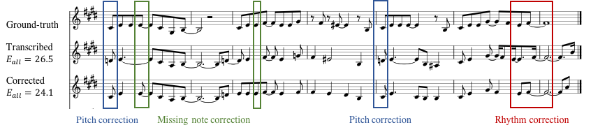
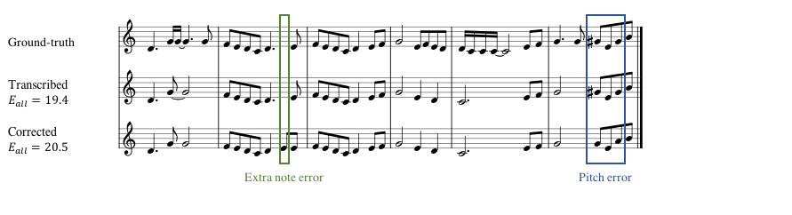
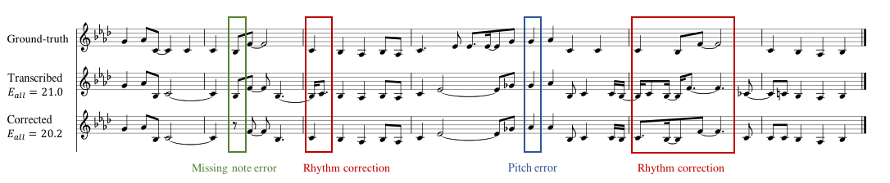

Statistical correction of transcribed melody notes
based on probabilistic integration of a music language model and a transcription error model
Example 1 (RWC-MDB-P-2001 No.8)

Ground-truth sequence
Transcribed sequence
Corrected sequence
Example 2 (RWC-MDB-P-2001 No.55)

Ground-truth sequence
Transcribed sequence
Corrected sequence
Example 3 (RWC-MDB-P-2001 No.67)

Ground-truth sequence
Transcribed sequence
Corrected sequence